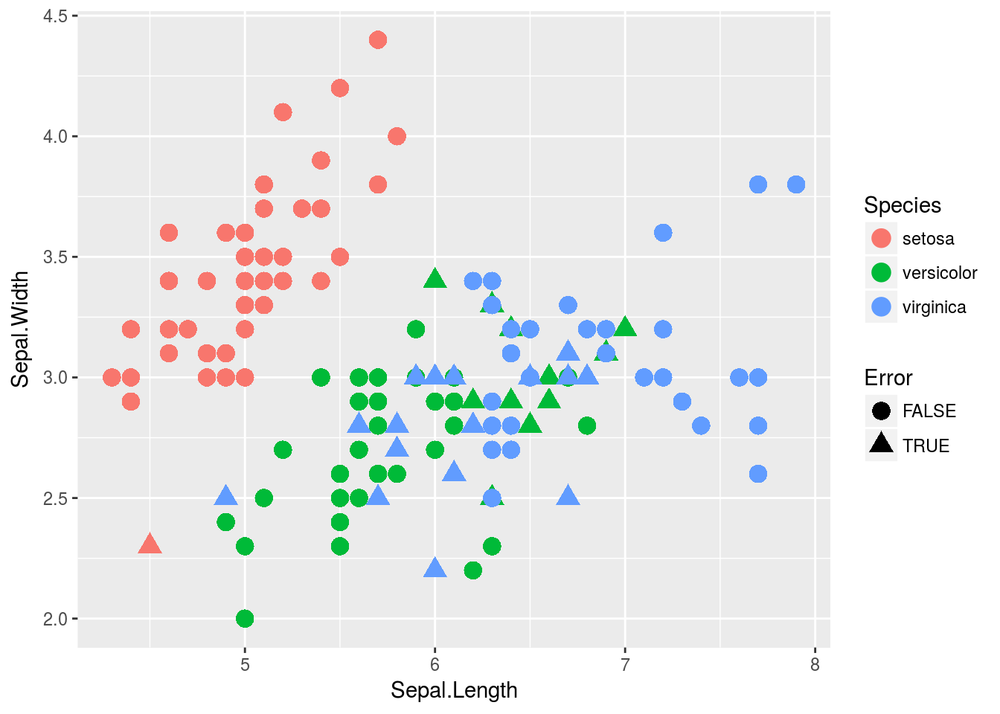
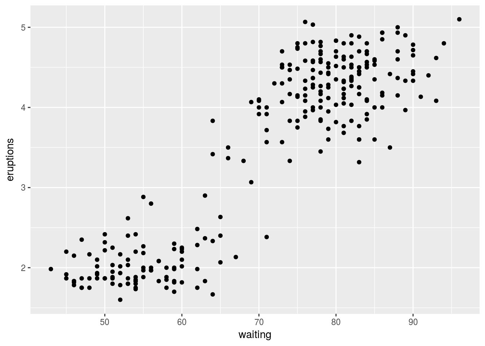

MACHINE LEARNING!!! So, if you’ve not heard of machine learning yet, you probably havn’t been watching any tv the last decade. Problem is machine learning is absoulutely massive field. This is the intro to a series of blogposts I plan on doing on various areas in machine learning, more specifically statistically backed methods therefore I call it statistical learning. In this blogpost I aim to break down the two main areas that are generally focused on. I also give an applied example of each area.
So I have dataset and I want to do some modelling of it, statistical learning has a very large tool box, generally the first goal is to narrow down what tools you can use. To do this you have to ask a few questions to yourself. This usually is completely down to the structure of your data and what information is present. Here I’ll be focusing more on the what information is prsent side.
Supervised learning is focused on problems where you have the answer for some of your data. An example which you may already know of is linear regression, there’s a dataset of potentially thousands of predictor variables \(x_i\) and then for each one of these points there’s a response variable \(y_i\). Datasets that have this response variable are called “labeled”. Methods which make use of this response variable are known as supervised methods. Generally want to find a model \(f(x)\) which will then do a pretty good job at predicting \(y\). Hence the name supervised, we’re supervising our method by telling it that it wants to find \(y_i\).
On the other hand we have unsupervised learning, it’s where we have these \(x_i\) points but there’s no label with the datapoint. In the previous supervised case, most methods use the labels to estimate the function \(f(X)\). In unsupervised learning the methods must instead find their own function. Clustering is one of the most popular methods in this field, it involves splitting the data \(x\) into clusters.
Example - Supervised:
The iris dataset is a classical dataset used in statistics, it contains 4 features, sepal length, sepal width, petal length and petal width. Each observation has the species which it came from, therefore this dataset is labeled so a supervised learning algorithm is ideal. This form of supervised learning is known as classification, this is when the label is a factor rather than a continous number.
## Sepal.Length Sepal.Width Petal.Length Petal.Width Species
## 86 6.0 3.4 4.5 1.6 versicolor
## 73 6.3 2.5 4.9 1.5 versicolor
## 144 6.8 3.2 5.9 2.3 virginica
## 105 6.5 3.0 5.8 2.2 virginica
## 30 4.7 3.2 1.6 0.2 setosa
## 10 4.9 3.1 1.5 0.1 setosa
## 42 4.5 2.3 1.3 0.3 setosa
## 69 6.2 2.2 4.5 1.5 versicolor
## 5 5.0 3.6 1.4 0.2 setosa
## 21 5.4 3.4 1.7 0.2 setosaHere I’ll just use the features corresponding to sepal, this allows us to easily plot the data, however will probably result in a loss of accuracy. Here we’ll use the simplest supervised learning algorithm, k-nearest neighbours. You specify the number k, then the algorithm finds the k closest points, it then takes all of these as votes for the class label and the majority then is used as the prediction.
library(class)
set.seed(123)
#Subset the data
train <- iris[c(1,2)]
labels <- iris$Species
#fit the model
model <- knn.cv(train=train,cl=labels,k=5)
##Check % of correct
#Error if FALSE
Error <- model!=labels
print(paste("Classification Error rate:",mean(Error)))## [1] "Classification Error rate: 0.226666666666667"##Plot
#iris
library(ggplot2)## Warning: package 'ggplot2' was built under R version 3.4.2iris_plot <- ggplot(aes(x=Sepal.Length, y=Sepal.Width, color=Species), data=iris)
iris_plot+geom_point(aes(shape=Error),size=4)
The classification error rate is a common measure of how many points were classified wrong. 0 being the best which means every point was classified correctly. I also plotted the in
Example - unsupervised
Here I give an example of clustering I’ll use geyser dataset which includes measurements from the old faithful geyser. it involves 2 measurements,“eruptions” how long an Eruption lasted and “waiting” time until the next eruption.
faith_plot <- ggplot(aes(x=waiting,y=eruptions), data=faithful)+geom_point()
faith_plot
As we can see from the plot there’s 2 clear groups of data with a few random points inbetween Here I’ll use a similar method to before, it’s called k-means. For this method you specify k like before which is how many clusters the algorithm will choose, then it’ll find k centers. A point will be assigned to the closest center. Looking at the picture it’s quite clear that k=2 is a good choice.
model <- kmeans(faithful,2)
Cluster_assignment <- as.factor(model$cluster)
ggplot(aes(x=waiting,y=eruptions,color=Cluster_assignment), data=faithful)+geom_point()As you can see the k-means algorithm split the eruptions as we’d expect, one with high times and one with low times. This problem is quite trivial as there’s only two dimensions, it’s easy to see that a rule like “split if waiting time is over 70” would do just as well. When you get onto problems with more features it becomes much more difficult to seperate clusters; therefore, more advanced analysis than just looking at a plot must be used.
Summary
There’s a clear difficulty with unsupervised methods, you don’t know the answer. This makes it extremely difficult to say how good a solution is and often you’ll have two possible solutions which work equally as well but you must choose one. Whereas in supervised you can easily test how well the method does just by looking at the answer that’s in your dataset i.e the classification error rate we used. There’s also hybrid method where the data is a mixture of labeled and non labled points known as semi-supervised methods.
A good book thats free which is basically a dictionary and guide book to using these methods can be found at An introduction to Statistical learning.